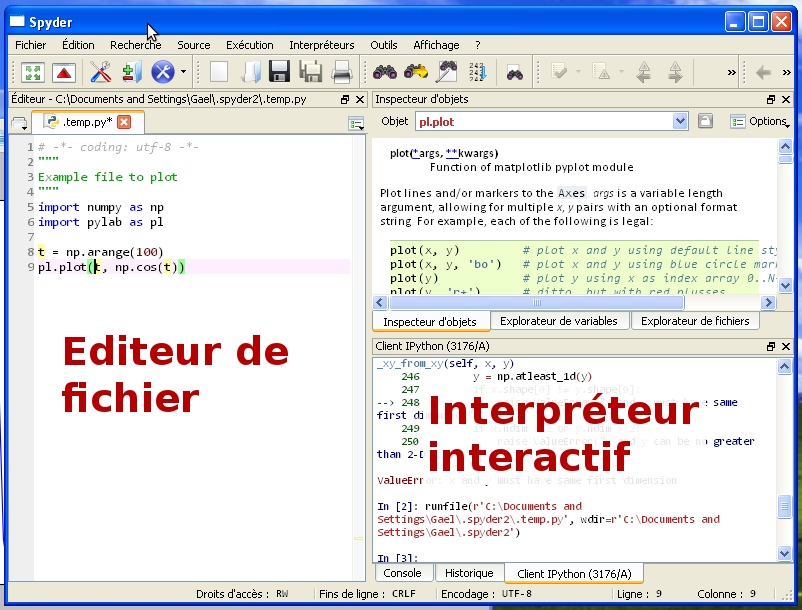

Python est un langage de programmation très polyvalent et modulaire, qui est utilisé aussi bien pour écrire des applications comme YouTube, que pour traiter des données scientifiques. Par conséquent, il existe de multiples installations possibles de Python. L’utilisateur débutant peut donc se sentir dérouté par l’absence d’une référence unique pour Python scientifique. Nous conseillons donc un logiciel unique pour la formation, la suite scientifique Anaconda développée par l’entreprise Continuum. Anaconda rassemble tout le nécessaire pour l’enseignement de Python scientifique: le langage Python et ses modules scientifiques.
En particulier, Anaconda fournit un environnement de travail adapté à l’enseignement et au calcul scientifique, spyder, que nous utiliserons pour la formation.
Pour le calcul scientifique il faut utiliser Python 2.
| Python: | Langage + librairie standard très riche
|
|---|---|
| numpy: | |
| scipy: | Outils numériques standards: FFT, intégration, résolution de système non-linéaires |
| matplotlib: |
Tout est libre, développé en grande partie par des individus sur leur temps libre.
Pour lancer spyder:
Spyder présente 2 panneaux que nous allons beaucoup utiliser: en bas à droite, un interpréteur interactif Python, à gauche un éditeur pour écrire ses scripts Python.
Nous voulons configurer le panneau de droite pour utiliser l’outil “IPython”, qui permettra la visualisation interactive de données:
Aller dans les menus Outils -> Préférences et dans la boite de dialogue correspondante, dans la section Console -> Options avancées, décocher “Ouvrir un interpréteur Python au démarrage”, et cocher “Démarrer un noyau IPython au démarrage”.
Dans l’onglet ‘Modules externes’, remplacer les options de la ligne de commande par ‘–pylab’.
Dans l’interpréteur (panneau de droite), taper ‘1 + 1’:
>>> 1 + 1
2
Dans l’éditeur (panneau de gauche), ajouter la ligne:
print(1 + 1)
Puis, dans le menu ‘Exécution’, sélectionner ‘Exécution’, ou appuyer sur la touche ‘F5’. Dans le dialogue qui s’affiche ‘Configurations d’exécution’, sélectionner ‘Exécuter dans l’interpréteur Python ou IPython actif’.
>>> a = 1
>>> b = 'Bonjour'
a et b sont des objets de différent types : a est un entier (int), et b est une chaîne de caractères (string).
En Python, les types ne sont pas déclarés explicitement.
| Nombres | Entier 1 — Flottant 1. — Complexe 1 + 1j — Booléen False |
| Chaînes de caractère | Chaînes ‘Bonjour’ — Chaînes avec accents u’Gaël’ |
A différents types d’objets, correspondent différentes opérations possibles:
>>> 2 * a
2
Remarque
Puissance:
>>> 2 ** 3
8
Attention
Division entière
>>> 1/2
0
>>> 1./2
0.5
>>> float(1)/2
0.5
Listes
>>> l = [0, 1, 2, 3]
>>> l[0]
0
Attention
Les indices commencent à 0, et non à 1
On peut compter à partir de la fin en indexant une liste:
>>> l[-1]
3
Et on peut avoir des “tranches” d’une liste (“slice” en anglais):
>>> l[1:3]
[1, 2, 3]
La syntaxe du “slicing” est start:stop:step.
Une liste peut être modifiée:
>>> l[0] = -1
>>> l
[-1, 1, 2, 3]
>>> l.append(4)
>>> l
[-1, 1, 2, 3, 4]
Remarque
Les listes sont donc des objets “mutables”.
Remarque
l.append est une “méthode” de l.
Les méthodes de l peuvent être découverte en appuyant sur Tab dans IPython:
In [2]: l.
append count extend index insert pop remove reverse sort
Pour savoir ce qu’une méthode fait:
In [2]: l.append?
Type: builtin_function_or_method
String Form:<built-in method append of list object at 0x34fa128>
Docstring: L.append(object) -- append object to end
Et plus encore
| dictionnaires: | >>> d = {"Gael": "Informatique", "Werner": "Physique", "Emmanuelle": "Physique"}
>>> d["Damien"] = "Informatique"
>>> d["Gael"]
"Informatique
|
|---|---|
| tuple: | Comme une liste, mais non mutable: >>> l = (0, 1, 2, 3)
>>> l[0] = -1
---------------------------------------------------------------------------
TypeError Traceback (most recent call last)
<ipython-input-4-2c4c55c1f409> in <module>()
----> 1 l[0] = -1
TypeError: 'tuple' object does not support item assignment
|
| set: | Ensemble d’éléments uniques muni d’opérations comme l’intersection ou l’union. |
Opérations conditionnelles
>>> a = 1
>>> if a == 1:
... print('a vaut bien 1')
... else:
... print('a ne vaut pas 1')
Remarque
== est différent de =. Le premier est un “test” et le deuxième une “affectation de variable”.
Remarque
obligatoire.
>>> if a == 1:
... print('a vaut bien 1')
... print("c'est certain")
Remarque
Pour taper des instructions sur plusieurs lignes, l’éditeur de texte (panneau gauche de spyder) est plus pratique.
Conditions multiples: a == 1 and b == 1, a == 1 or b == 1
Autres conditions: a != 1 (a différent de 1), a < 1, a > 1
Boucles
>>> for i in range(3):
... print(i)
0
1
2
On peut itérer sur les éléments d’une liste:
>>> l = [0, 1, 2]
>>> for i in l:
... print i
0
1
2
def f(x, y):
print x
return x + y
Arguments optionnels:
def f(x, y=1):
return x + y
z = f(x, y=2)
Les “modules” permettent d’importer de nombreuses fonctionnalités additionnelles, allant de modules d’interface graphique au calcul scientifique.
Voici un exemple qui importe un nouveau type de nombre, les fractions:
>>> import fractions
>>> a = fractions.Fraction(2, 3)
>>> print a
2/3
>>> b = fractions.Fraction(1, 2)
>>> print b
1/2
>>> a + b
Fraction(7, 6)
>>> print a + b
7/6
Voir aussi
Exercice: Implémenter quicksort
La page wikipedia décrivant l’algorithme de tri quicksort donne le pseudo-code suivant:
function quicksort('array')
if length('array') <= 1
return 'array'
select and remove a pivot value 'pivot' from 'array'
create empty lists 'less' and 'greater'
for each 'x' in 'array'
if 'x' <= 'pivot' then append 'x' to 'less'
else append 'x' to 'greater'
return concatenate(quicksort('less'), 'pivot', quicksort('greater'))
Saurez vous transformer ce pseudo-code en code valide Python.
Des indices:
- La longueur d’une liste est donnée par len(l)
- Deux listes peuvent être concaténées avec l1 + l2
- l.pop() retire le dernier élément d’une liste
- Attention: une liste est mutable
Il vous suffit de compléter cette ébauche:
def quicksort(l):
# ...
return l
l = [3, 4, 1, 2, 5, 6]
print quicksort(l)

{kind=link}
{kind=link}
{kind=link}
{kind=link}
{kind=link}
{kind=link}
{kind=link}